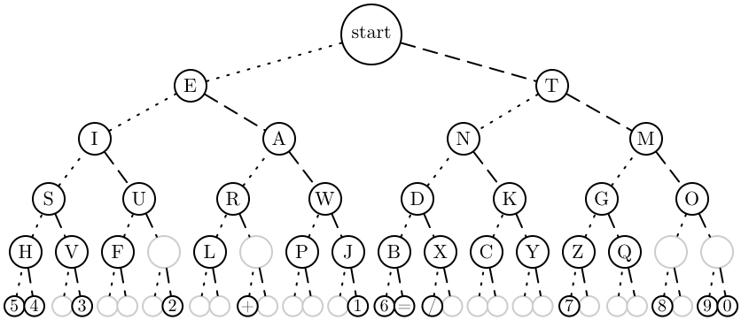

Hi, I'm Jessie. I'm an artist who is passionate about technology, mathematics, science, storytelling, and communication.
I enjoy experimenting with different methods and mediums to combine these interests and collaborate with people from various fields, especially those from STEM, to create meaningful art.
My goal is to enrich the world with inspiration and love ✴︎
(much like how Miyazaki's animations impart warmth and insight across various cultures through their enthralling visuals, music, and narratives),
and to foster communication and expression that transcend the barriers of language, culture, and community.
Projects Library
Writings:
Art Meet STEM:
✴︎
Artworks:
FineArt:
Tech x Art:
Alternate Communication:
Fashion:
Machine Learning:
Visuals x Music:
Interest in Cyberpunk Expression:
✴︎
Current Personal Project (In Process):
Advanced Education:
Youth Education:
Making Picture Book about boundaries (character development)
Writing Book about risks - Balancing on the Edge
✴︎
*
Videos I've Watched that's very cool (that I learnt a lot from):
✴︎
Some Cool Events and Some organizations that's doing cool things
✴︎
Insights:
Quotes I respect/love:
- “Provability is a weaker notion than truth, no matter what axiomatic system is involved” — Gödel. (The Book)
- "You can know the name of the bird in all the languages of the world, but when you're finished, you'll know absolutely nothing whatever about the bird." - Richard Feynman (The Article)
- "When you reach a certain height in your work, you push the boundaries of technology." - Cai Guo-Qiang, Contemporary artist (The Documentary)
✴︎
✴︎
Amazing artists x inventors:
Samul Morse:
I literally just discovered. Just, I mean Jan 2024, that Samual Morse, the guy who invented Morse code, started off as a painter and painted one of my favorite paintings:
"The Gallery of the Louvre" (The Painting).
It's very emotional to find this out, very joyful. My work - Cipher, which I created in 2021, is inspired by Morse Code.
Beautiful and clear tree graph showing how "long" it takes to send a character:
